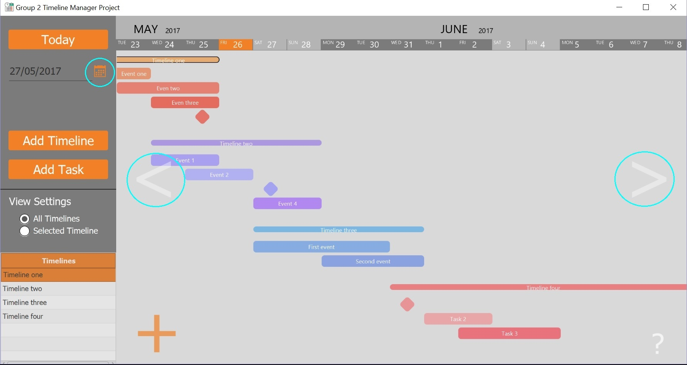

All timelines and events that have been created will be saved into the SQL database and loaded upon the restart of the application. The colors of the timelines and their events will change each time the application is started. However, the view focus will be at the start on those timelines and events that are active in the current week.
To change the current week either: